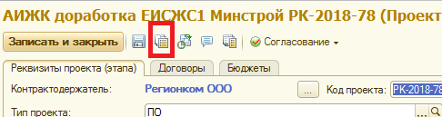
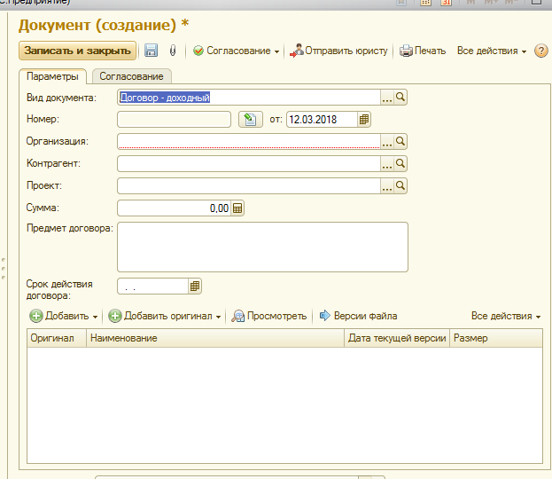
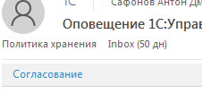
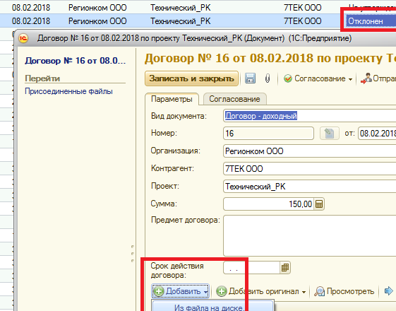
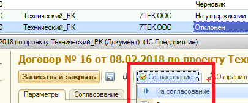
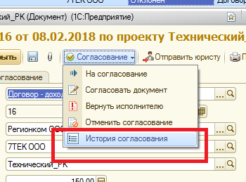
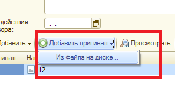

Инструкция по согласованию документов
1. Всем необходимо установить надстойку, которая позволит согласовать договор через почту: https://hr.regioncom.ru/agreement/manual.html
2. Запуск договора на согласование происходит из Рабочего места Документы ( интерфейс пользователя - справочники - документы)
3. Все документы, касающиеся отдельного проекта сгруппированы в самом проекте
4. Запуск нового договора подразумевает заполнение полей
- доходный или расходный договор
- дата
- номер присваевается автолматически при сохранении договора, но если номер присвоен контрагентом - вносим руками
- Организация ( РК или 7 тек)
- контрагент ( выбирается из справочника, а если отсутствует, то вносится новый, автоматически ченрез ввод ИНН
- проект
- сумма, предмет договора
- срок действия договора
- добавляется текст договора в ворде (кнопка добавить - из файла на диске)
- сохранить ( присвоится номер)
5. Отправляем договор на согласование Юристу - кнопка «отправить юристу» и в открывшемся окне кнопка «отправить»
6. Татьяна Попкова получает письмо из 1с с необходимостью направить договрр на согласование, по номеру находит договор в 1с и направляет его на согласование, предварительно , при необходимости отредактировав

- рекактируется список согласующих
- договор отправляется на согласование
7. Согласующий получает письмо от 1с с необходимостью согласовани договора, нажимает кнопку согласовать И в открывшемся окне видит реквизиты договора, сам договор, и внопки согласовать/отклонить и комментарий
8. В случае отклонения договора инициатор повторно, внеся корректировки отклонившего, запускает процесс согласования, добавя отредактированную версию договора
 9. По факту согласования или несогласования договра инициатору приходит служебное письмо
10. В любой момент, нажав кнопку печать, можно распечатать лист согласования
Или просмотреть историю согласования через одноименную кнопку
11. По факту согласования и подписания инициатор обязан добавить оригинал договора
- юристу приходит письмо о добавлении оригинала для проверки, в реестре появляется соответсвующая отметка